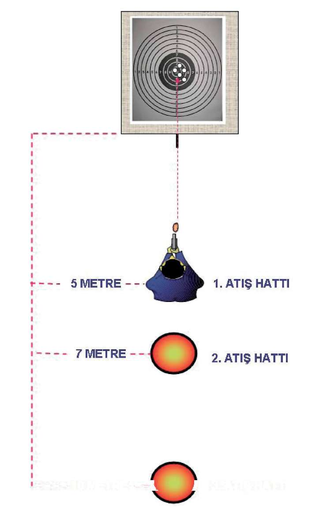

Bu teknik;
^ Tabancayı sivil kıyafetlerin altında taşıyan kişilerin, tabancasını kullanma zorunluluğu doğduğunda, tabancasını basit tekniklerle çekip kurarak aktif duruma getirmesini sağlar 94

BÖLÜM
İLERİ SEVİYE ATIŞ TEKNİKLERİ
10 METRE - -V J 3. ATIŞ HATTI
Şekil-9) Sivil Kıyafetlerden Yarı Otomatik Tabancayı Çekerek Atış İstasyonu 95
ÖLÜM
ERİ SEVİYE ATIŞ TEKNİKLERİ
2. MP5 MAKİNALI TABANCA İLE İLERİ SEVİYE ATIŞ TEKNİKLERİ
2.1. MP5 MAKİNALI TABANCAYI KURMA VE HIZLI ATIŞ TEKNİKLERİ
2.1.1. Kurma Kolunu Çekerek
MP5 makinalı tabanca, tam otomatik bir silah olduğundan, emniyet mandalı tek tek konumunda bulundurulmalıdır.
Silahı, aktif olarak kullanacağınız elinizle kabzadan kavrayın. Silahın şarjör yuvası pasif olarrak kullandığınız elinize doğru yan yatırarak, şarjör yuvasına takın. Bu durumda iken namluyu daima önü gösterir pozisyonda tutun. Silahı hızlı bir şekilde doldururken silahı aktif olarak kullandığınız elinizle kabzadan kavrayarak silahı bel seviyesinde yere paralel tutun. Diğer pasif elinizle kurma kolundan tutarak çekip bırakmadan aynı elinizle tekrar yerine oturtun. Aynı anda silahın kurma kolunu bırakıp el kundağından sıkı şekilde kavrayın. Silahı iki elinizle önce öne doğru itip silahın dipçik kısmını koltuk altından kurtararak omuz boşluğuna yerleştirin. Yüzünüzü de dipçik kısmına kaynak yaparak hızlı şekilde çift gözünüzle hedefinize nişan alın.
Bunlarla eş zamanlı olarak silahı aktif kullandığınız elinizin yönündeki ayağınızı, topuktan sağ tarafa doğru döndürürken, eş zamanlı olarak diğer ayağınızı yerden sürterek öne doğru çıkarın. Böylece ayaklarınız bir “L” pozisyonuna gelmiş olur. Ayrıca ayaklar hafif kırık, göğüs ve baş hedefe dik pozisyonda olmalıdır. (Bakınız Resim-12.a)